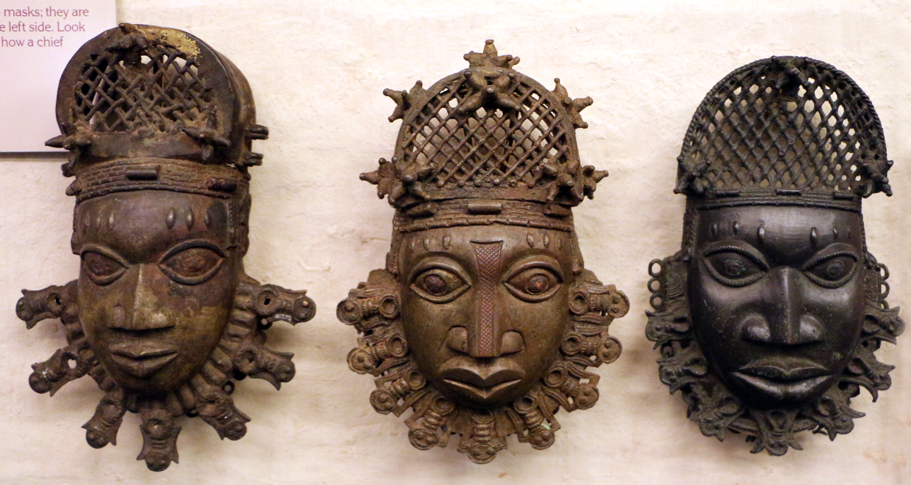
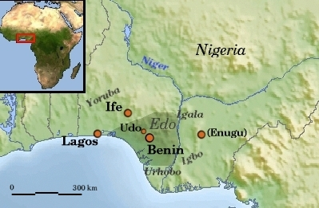
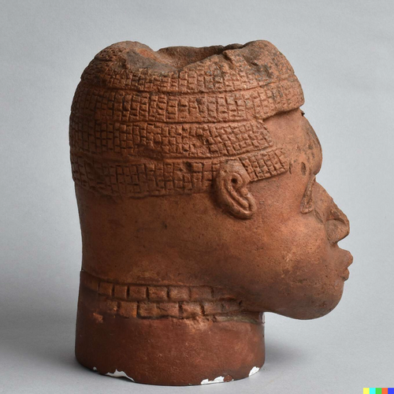
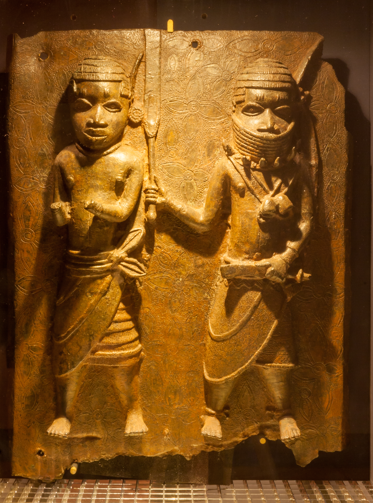
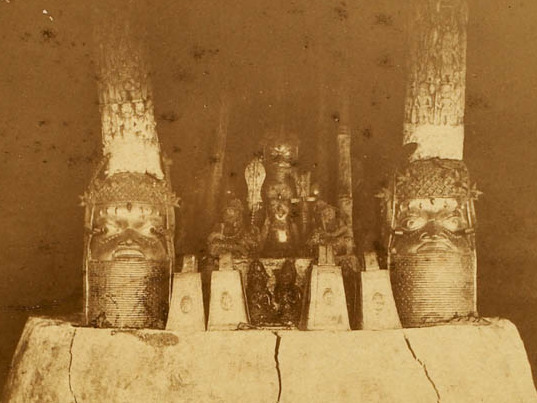
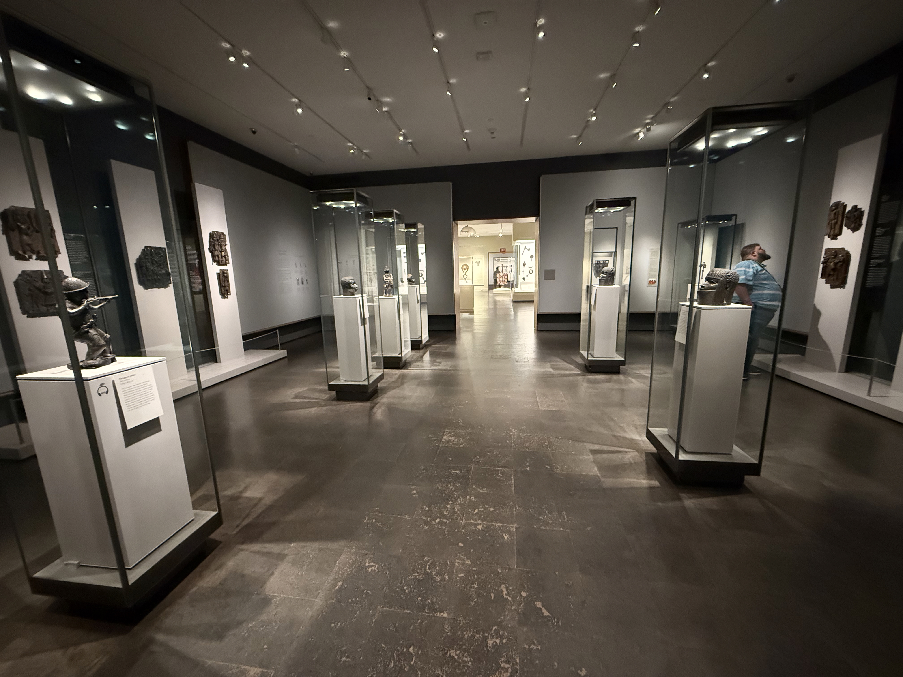

Ryder, Ian F.C. Benin and the Europeans, 1485-1897. Longmans, 1969.
Igbafe, Philip A. "The Fall of Benin: A Reassessment." Journal of African History 11, no. 3 (1970): 385-400.
Osadolor, Osarhieme Benson and Leon Enahoro Otiode. "The Benin Kingdom in British Imperial Historiography." History in Africa 35 (2008): 401-418.
Ezra, Kate. Royal Art of Benin: The Perls Collection in the Metropolitan Museum of Art. Metropolitan Museum of Art, 1992.
Hicks, Dan. The Brutish Museums: The Benin Bronzes, Colonial Violence and Cultural Restitution. Pluto Press, 2020.
The Oba is a hereditary leader in the Kingdom of Benin. The Oba's power extends across spiritual, cultural, and political life. The term loosely translates to “king.” The title is used in both Edo and Yoruba political traditions. According to Benin oral traditions, the present Oba dynasty traces its origins to Ile-Ife, an important center of Yoruba civilization, although the precise nature of this historical relationship remains a subject of scholarly debate.
The Ogiso dynasty first came to power around the tenth century, according to traditional accounts. It is the earliest known dynasty to have ruled Benin. Oral sources suggest its name translates to “kings of the sky.” The Ogiso dynasty goes so far back that it is difficult to separate its historical rulers from figures preserved in oral traditions and legend. The dynasty collapsed around the turn of the thirteenth century, at which point the Oba dynasty emerged. According to Benin oral traditions, Oranmiyan, a prince associated with Ile-Ife, played a foundational role in the establishment of the new dynasty, although his son Eweka I is generally recognized as its first Oba.
Igue continues to be celebrated today in Benin City, Edo State, Nigeria. As in the past, it remains a celebration of spiritual power, renewal, and gratitude to ancestors. Historically, Igue was closely associated with the Oba as both a political and spiritual leader. Today, the festival continues to affirm the sacred authority of the Oba, honor ancestral traditions, and celebrate the continuity of Benin's cultural and spiritual heritage. It is a period during which mourning and funeral ceremonies are traditionally prohibited.
The Maxim gun was an early form of machine gun and the first to function fully automatically. It took its name from its American-born British inventor, Hiram Maxim, who utilized the power of recoil as a key feature. The weapon fired roughly 600 rounds a minute—about the same output as 60 riflemen. Although invented in 1884, it continued to see use during World War II. It also influenced the design of many successor weapons. The Maxim gun was among the weapons that gave British imperial forces a devastating military advantage during the late nineteenth-century conquest of African societies.
The sixteenth-century ivory pendant masks depicting Queen Mother Idia are among the most celebrated works of Benin royal art. Their monetary value has been estimated in the millions of dollars. In 2010, one such mask was valued at £3.5–£4.5 million (approximately $5.5–$7 million at the time) ahead of a planned Sotheby's auction in 2011, although the sale was subsequently withdrawn. Higher valuations, reaching as much as $15 million, have also been suggested, but these remain speculative rather than documented auction results. Two nearly identical masks are held by the British Museum in London and the Metropolitan Museum of Art in New York. Other examples are held by the Seattle Art Museum and the Al-Thani Collection, while a mask formerly held by the Linden-Museum in Stuttgart, Germany, was returned to Nigeria in 2022. These masks are part of the broader history of Benin royal treasures, many of which were looted during the British invasion of 1897.
FESTAC ’77 refers to the Second World Black and African Festival of Arts and Culture. After initially being planned for 1970, it finally took place in January and February 1977 in Lagos, Nigeria. A month-long event, FESTAC celebrated African art, literature, drama, dance, and music from across the continent and the broader global African diaspora. An image of the sixteenth-century ivory pendant mask of Queen Mother Idia became the festival's official emblem, symbolizing African cultural heritage, pride, and the reconnection of Africa with its global diaspora.
Image 1:

Caption & citation for Image 1
Image 2: A map of Edo State

Caption & citation for Image 2
Image 3: Artificially restored Benin Bronze

Caption & citation for Image 3: Part of artist Minne Atairu's AI-Restored Benin Bronzes project, which uses DALL-E2. This project uses AI to create plausible restorations of objects damaged by colonial looting, natural weathering, and conservation practices.
Image 4: Benin bronzes

Caption & citation for Image 4: Benin bronzes at the Horniman Museum, England.
Image 5: Ancestral Shrine, Royal Palace, Benin City, 1891

Caption & citation for Image 5: Earliest known photograph of Oba’s compound, Benin City, May 1891. Photo by Cyril Punch.
Image 6: Benin Bronzes Gallery

Caption & citation for Image 6: Benin bronzes in a gallery at the Museum of Fine Arts, Boston.